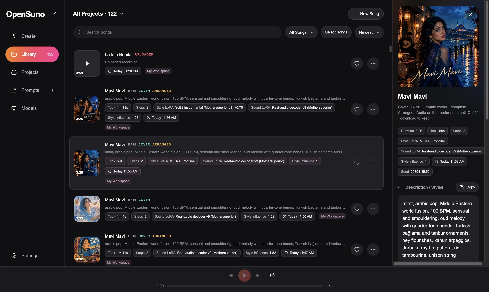

Write songs from lyrics and a style, cover your own recordings, extend and edit finished tracks, and shape the sound with community LoRAs. No cloud, no subscription.
Suno liber in aeternum · sound, free forever

A full browser studio around YuE2, the open lyrics-to-song model. Everything runs locally; your recordings never leave your computer.
Lyrics plus a style line. The model can write a chord-annotated score first for structured songs. Instrumental mode, voice choice, and up to 8 versions per run.
Upload a song, keep its melody (and chords), and let the model arrange it in a new style with in-tune chords on every bar.
Extend a song, regenerate from any bar, or edit the arrangement at the score level: style, tempo, harmony and structure.
Two stackable slots: one changes what is written (genre, artist style), one changes the sound. A curated catalog downloads in one click.
73 style presets with blending, a style builder, optional AI style suggestions, section-tag picker, lyric search and automatic album art.
Apple Silicon via MLX, Windows and NVIDIA via CUDA. Render on another machine's GPU with the render node.
SheetSage2 and MERT-v2 transcribe the melody; YuE2 arranges the rest around it.
Allow about 20 GB of disk space. Models download from the Models page inside the app: resumable, verified, pinned to exact versions.
# needs Homebrew
git clone https://github.com/victorcampeanu/OpenSuno-YuE2.git
cd OpenSuno-YuE2
bash "Install OpenSuno.command"
open "Launch Studio.command"
Then open Models and download YuE2 BF16 (7.5 GB).
# Python 3.11, FFmpeg, current NVIDIA driver
git clone https://github.com/victorcampeanu/OpenSuno-YuE2.git
cd OpenSuno-YuE2
powershell -ExecutionPolicy Bypass -File "Install OpenSuno.ps1"
powershell -ExecutionPolicy Bypass -File "Launch Studio.ps1"
Then download YuE2 CUDA BF16 in Models. Windows support is experimental.
The studio opens at http://127.0.0.1:7862. Full guides: README · Models · Using the studio
OpenSuno is MIT-licensed and open to contributions. Fork it, send pull requests, report bugs, or share your songs and LoRA recipes.